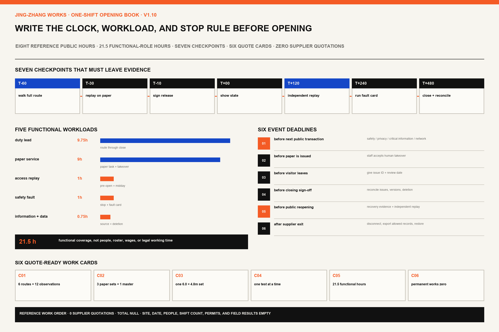

Reference quantities and acceptance actions are defined. Supplier quotations, total, and planned shift count remain null.
MAKE THE CITY WORK FIRST
A task is usable
only when it gets done.
A visitor without a smartphone can speak to a person and leave with a dated paper result. During a network outage, passage, counter, and recheck place keep working.
01ASK
02HUMAN CHECK
03LEAVE WITH PAPER
02 · ASSISTED OPEN
03 · MANUAL-ONLY DEGRADED
FIRST SHIFT GATE WALLET · ORIGINAL RELEASE MECHANISM
Seven receipts.
One missing, stay closed.
The owner signs the first key. A different functional role replays the evidence and signs the second. One person cannot do both.
0 / 7 SIGNEDNOT RELEASED · FIELD RESULTS 0
KEY 01 owner confirms fact, resource, or authorityKEY 02 different role replays and checksFAIL affected service stays closed
G01Site & timesite controller × duty leadproof · use and hand-back sheetexpires when shift ends
G02Access & life safetysafety × access replayproof · four routes walkedexpires when a route changes
G03Same task on paperservice owner × paper operatorproof · same task completedexpires on form or source change
G04Information, data & exitdata owner × service ownerproof · source, deletion, disconnectexpires on field or supplier change
G05Shift takeoveroperations owner × named substituteproof · paper task and stopexpires when a person leaves
G06Quote & purchasebuyer × acceptance ownerproof · three quotes or exceptionexpires on quantity or quote change
G07Open, close & carryduty lead × independent replayerproof · open, fault, closenever carries into next shift

ONE-SHIFT OPENING BOOK · ORIGINAL OPERATING MECHANISM
Write down
how one shift opens.
The route is walked sixty minutes before opening and release is signed ten minutes before. A no-app task is replayed at two hours, one fault card runs at four hours, and closing is reconciled after eight hours. The next public transaction, paper issue, visitor departure, close, and reopening each have a human deadline.
7checkpoints
6quote objects
21.5hfunctional effort
0supplier quotations

Prototype WorksContain failure under controlled conditions

Learning WorksPut public material in human hands

Everyday WorksSurvive an ordinary day before adoption

ORIGINAL REVERSIBLE TRIAL PACKAGE
Build takeover
into the room.
6.0 × 4.8 m is a trial dimension. A 1.8 m ordinary passage, dual-height counter, paper-result table, and quiet recheck place remain legible across four states.
01 · MANUAL OPEN
02 · ASSISTED OPEN
03 · MANUAL-ONLY
04 · CLOSED
A missing site, fire, egress, accessibility, or operating approval prevents opening. The duty lead may switch to staffed manual service or close.
Six facts required before release
01OWNER
02NO-APP ROUTE
03MINIMUM DATA
04HUMAN TAKEOVER
05STOP CONDITION
06VALIDATION
0 / 12
No field task is complete. 12/12 means structural fields are present; 90/90 means offline synthetic rules returned expected decisions.
12SCENARIOS
12/12STRUCTURAL READY
6RELEASE FIELDS
6 / 0QUOTE CARDS / QUOTES
5 / 6STOP TYPES / CARDS
90/90SYNTHETIC MATCH
21.5hFUNCTIONAL EFFORT
16JUROR PATH PAGES